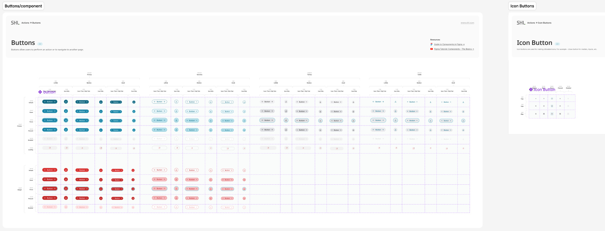
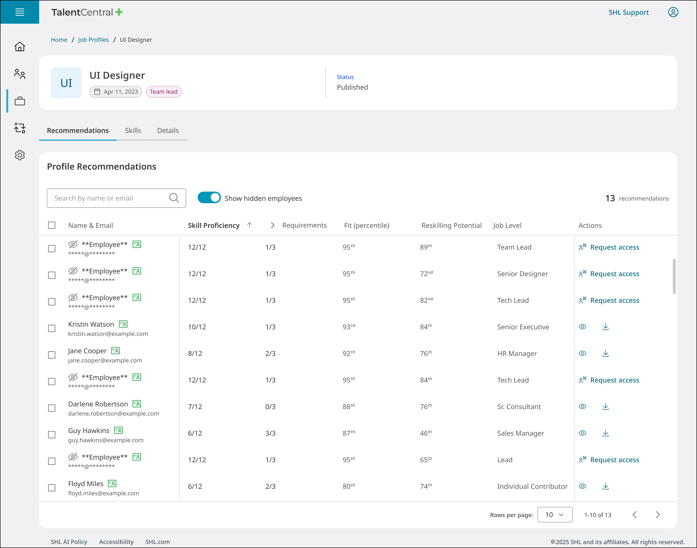

Talent Intelligence Design System · SHL
Recruiters felt like they'd switched companies mid-task.
TC, iAssess, Reporting, Insights: four legacy tools, four different front-end frameworks, one recruiter workflow. I helped build the design system that replaced that patchwork with one shared language: tokens, components, and the governance to keep it that way.
- My role
- Design system contributor: audit, tokens, components, docs
- Team
- Product, Design, Engineering, Science & Solutions
- Scope
- Foundations for the new Talent Intelligence (TI) platform
- Platform
- Web · enterprise B2B SaaS


Four corners of one workflow, none of which agree on how a table, a button, or a chart should look.
fragmented platforms unified into one design language
UI patterns and states audited across three products
of those patterns existed in all three. Half existed in only one.
accessibility built into tokens and components, not bolted on after
The problem
Four platforms, four different decades of design decisions, one recruiter stuck switching between all of them.
TC for projects and candidates, iAssess for assessment delivery, Reporting and Insights for analytics: four platforms, four different eras of front-end decisions. A single hiring workflow could route a user through two or three entirely different interfaces.
The move to a new TI platform was the opening to fix not just one experience, but how every future SHL experience would look, feel, and function.
- Multiple independent platforms with disconnected UI languages.
- Inconsistent accessibility and interaction patterns across products.
- Repeated design and development work, the same pattern rebuilt from scratch in every team.
- Confusion for end users moving between dramatically different UIs, sometimes serious enough to read as a security concern: the interface changed so much it felt like a different company.
- Difficulty maintaining and scaling visual styles across product lines.
Measuring the patchwork
I joined the design system effort as part of a cross-functional team spanning Product, Design, Engineering, and Science & Solutions. My focus was the foundations recruiters and designers would actually touch every day, and it started with an audit.
I listed every common UI pattern and state, from a primary button's hover to a toast's warning variant, and checked which of them existed in TC+, Insights and Reporting. The result put a number on what recruiters were feeling.
Where each audited pattern existed
117 patterns and states · one dot each
- 21 in all three
- 33 in two
- 59 in only one
- 4 in none
How much each product covered
patterns present, of 117
Only the tooltip was complete everywhere. None of the three had a desktop or tablet grid, and branding controls existed in just one.
See the audit by category
| Category | TC+ | Insights | Reporting |
|---|---|---|---|
| Buttons (large) | 9/10 | 7/10 | 2/10 |
| Buttons (medium) | 9/10 | 9/10 | 3/10 |
| Form fields | 13/13 | 3/13 | 0/13 |
| Search fields | 3/3 | 3/3 | 0/3 |
| Dropdowns | 4/5 | 3/5 | 4/5 |
| Pagination | 2/2 | 0/2 | 0/2 |
| Radio | 4/4 | 2/4 | 0/4 |
| Checkbox | 4/5 | 2/5 | 3/5 |
| Toggle | 4/4 | 2/4 | 0/4 |
| Tags & chips | 7/8 | 0/8 | 3/8 |
| Cards | 9/9 | 1/9 | 2/9 |
| Tabs | 3/3 | 1/3 | 1/3 |
| Menus | 4/4 | 0/4 | 0/4 |
| Toasts | 3/3 | 0/3 | 2/3 |
| Tooltip | 1/1 | 1/1 | 1/1 |
| Icons | 2/2 | 2/2 | 1/2 |
| Scroll bars | 2/2 | 2/2 | 1/2 |
| Grids & layouts | 0/2 | 0/2 | 0/2 |
| Examples | 17/21 | 9/21 | 12/21 |
| Branding | 6/6 | 0/6 | 0/6 |
Rebuilt from my audit table: every count is a row marked “Yes” for that product.
What I did from there
- Catalogued every inconsistency, accessibility gap, and duplicated pattern the audit surfaced.
- Contributed to the design principles and token system that became the system's foundation.
- Built and documented components in the shared library, matched to Storybook so engineering could validate behavior against the design spec.
- Partnered with a dedicated engineering owner to keep implementation and design in sync as the system scaled.
The decision
Simply updating the existing platform wouldn't solve the deeper issues of consistency, performance, and scalability. So the call was made: build the new Talent Intelligence platform from scratch, and put a unified, scalable design system at its core.
Everything downstream, tokens, components, documentation, governance, exists because of that one call.
The approach
Two moves accelerated the system without sacrificing quality.
Start from what already works
Instead of reinventing elements that didn't need reinventing, we adapted two open-source systems and customized them for SHL's brand and workflows.
Carbon Design System
Modular foundations to build the system's structure on.
Material UI (MUI)
Flexible components to customize rather than build from zero.
Define what "good" means for HR software, specifically
Generic design-system principles, "be accessible," "be consistent," don't capture what's actually at stake in HR tech. So the principles we set were specific to what SHL sells and who uses it:
Accessible by necessity, not by audit
Candidates complete assessments under high-stakes, sometimes legally scrutinized conditions. WCAG 2.1 AA had to be built into tokens and components from day one, not caught in a later compliance pass.
Credible for high-stakes decisions
Recruiters and candidates make hiring calls on this surface. Every pattern had to read as authoritative and unambiguous: enterprise-grade, not consumer-cute.
White-label ready
SHL's enterprise clients routinely ask for their own branding on top of the platform. Every token and component was built to be re-themed per client, colors, logos, typography, without anyone touching the underlying system.
Scalable across a growing platform
Modular and reusable, built for mobile, tablet, and desktop, and expandable as TI absorbs more of SHL's product line.
Building the system
With principles set, the system took shape live inside the platform, not just documented in Figma.
Tokens first
Naming runs two layers deep. A base scale names raw values, primary-500, secondary-200, each shade tagged with its contrast ratio. A semantic layer sits on top and names tokens by purpose: text-brand-primary, bg-button-primary_hover. Designers and engineers only ever consume the semantic layer, so re-theming a client's branding is a remap at the base layer, not a find-and-replace across every screen.
The base colour scale
each step shows its contrast with the text colour it's paired with, black or white
Primary
- 5018.76
- 10014.78
- 20012.40
- 3009.69
- 4008.28
- 5006.65
- 6005.60
- 7005.72
- 8008.23
- 90010.96
Secondary
- 5018.78
- 10014.59
- 20012.08
- 3009.24
- 4007.89
- 5006.14
- 6005.16
- 7006.10
- 8008.63
- 90011.51
Tertiary
- 5018.72
- 10014.47
- 20011.99
- 3009.15
- 4007.74
- 5006.14
- 6005.17
- 7006.08
- 8008.65
- 90011.47
Every step, from 50 to 900, has a text colour that clears the 4.5:1 AA threshold. The lowest pairing is 5.16:1, so accessibility travels with the token instead of being checked screen by screen.
Modular component library
Accessible, documented, reusable components engineered against Storybook form the building blocks of the TI platform and every SHL experience after it.

One button component, every state and variant it needs to ship, documented before an engineer ever touches it.
Interaction patterns: the hard calls, not the easy ones
Hover, focus, and disabled states were the easy 80%. The harder calls were things like picking one filter pattern that had to work whether a product exposed 3 facets or 30, and one table style that stayed legible from a 4-row summary card to a 900-row candidate list.
Documentation & engineering
A system nobody can find or trust doesn't get used. Every component ships with its own documentation, so designers and engineers understand not just how to use it, but why it's built that way. Here's the Button's, section by section.
Usage guidelines
What a component allows, what it explicitly doesn't, and why, backed by do/don't examples so the rule isn't just a sentence in a doc nobody reads.
Points to remember
- Use buttons for the most frequently used or most important actions on the page.
- Present a primary button no more than once per page.
- Never use Title Casing in buttons.
- Don't use buttons to navigate. Use a link when the action takes the user to a new page.

Do and don't, side by side, not buried in prose.
Variants & props
Every variant, size, and state a component supports, plus the full prop list with types and defaults, specified once so nobody has to guess or reverse-engineer it from the code.
| Prop | Type | Values | What it does |
|---|---|---|---|
| variant* | string | PrimarySecondaryTertiaryLink | Sets the variant of the button |
| color* | string | PrimaryWhitePositiveNegative | Sets the color variant of the button |
| state* | string | DefaultHoverFocusActiveDisabled | Shows the current state of the button |
| size* | string | XSmallSmallMediumLarge | Sets the size of the button |
| label* | string | 1–2 words | Text describing the button's action |
| isDisabled | boolean | TrueFalse | Turns on the disabled state |
| isLoading | boolean | TrueFalse | Turns on the loading state |
| isFullWidth | boolean | TrueFalse | Stretches the button to its container's width |
| iconOnly | boolean | TrueFalse | Turns on the icon-only variant |
| leadingIcon | boolean | TrueFalse | Shows or hides the leading icon |
| trailingIcon | boolean | TrueFalse | Shows or hides the trailing icon |
Tokens per state
The docs also say which token every property uses in every state, so no one hard-codes a hex value. This is the map for a primary-colour button.
| State | Background | Label text |
|---|---|---|
| Primary variant | ||
| Default | interactive. | interactive. |
| Hover & focus | interactive. | interactive. |
| Disabled | interactive. | interactive. |
| Secondary variant | ||
| Default | transparent | interactive. |
| Hover & focus | interactive. | interactive. |
| Disabled | transparent | interactive. |
| Tertiary variant | ||
| Default | interactive. | interactive. |
| Hover & focus | interactive. | interactive. |
| Disabled | interactive. | interactive. |
Collaboration with engineering
A design system is a cross-functional product, not a design-only project. We aligned tech leadership early to share ownership, set up Storybook as the single source of truth for validating components and interaction behavior, and assigned a dedicated engineering owner, which accelerated implementation and kept governance consistent.

Storybook as the shared source of truth: the same component spec designers reviewed and engineers implemented against.
Impact
Before: every platform its own visual language, its own rules.

After: one token set, one component library, running live in TalentCentral+.
aligns Product, Design, Engineering, and Science & Solutions on one shared system
reusable components and predictable patterns shortened build cycles
higher quality and accessibility standards, reducing errors and improving long-term stability
Beyond speed, the system built something harder to quantify: trust. The same button, the same error state, the same filter, now behaving identically everywhere a recruiter or candidate encounters it.
Reflection
Cross-functional, not design-only
Tech leadership alignment mattered as much as any token.
Real workflows, not hypothetical ones
Building against Talent Management kept the system grounded, not a components-for-their-own-sake exercise.
Adapt, don't reinvent
Carbon and MUI were the single biggest accelerant to quality and delivery speed.
Governance is the hard part
Without clear ownership, a design system deteriorates the moment its authors stop watching it.
Consistency is what builds trust, internally between teams, externally for whoever uses what we ship. More than a component library, it became the strategic foundation the rest of SHL's Talent Intelligence ecosystem builds on.